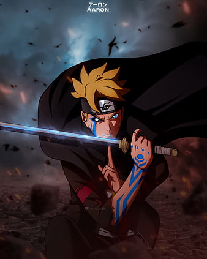

El creador de Naruto considera la posibilidad de desarrollar más spin-offs, y uno centrado en Itachi Uchiha podría hacerse realidad.
El creador de Naruto, Masashi Kishimoto, ha dejado abierta la posibilidad de expandir aún más el universo de su obra con nuevos spin-offs. Entre las propuestas más emocionantes está un proyecto centrado en Itachi Uchiha, un personaje que ha fascinado a los fanáticos por su compleja historia. Aunque no hay confirmaciones oficiales, la idea ha generado grandes expectativas entre los seguidores de la saga.
Leer más...
El 22 de septiembre se celebra el cumpleaños de Shikamaru Nara, el brillante estratega de la Hoja, conocido por estar siempre un paso adelante y por su habilidad para apoyar a sus compañeros desde las sombras.
¡Feliz cumpleaños, Shikamaru Nara! El estratega más brillante de Konoha, conocido por su inteligencia y lealtad, celebra otro año de ser un pilar en el equipo. Desde las sombras, sigues demostrando que el ingenio supera la fuerza bruta. ¡Que sigas inspirándonos con tu calma y sabiduría!
Leer más...
Boruto: estos son algunos de los cambios que ha sufrido el manga tras el salto temporal

Tras algún tiempo de pausa, el manga de Boruto retomó su publicación, cambiando también el nombre de la obra, señalando así que era un gran cambio de enfoque en la trama. Ahora se llamaría 'Boruto: Two Blue Vortex'. De esta forma, el título dejaba atrás todo el tema de Naruto y su generación, para dar total relevancia a la nueva generación.
Leer más...
Buenas noticias para la película en imagen real de Naruto
Tras años de espera, la adaptación en imagen real del anime Naruto ha comenzado su producción bajo Lionsgate, con la supervisión del creador Masashi Kishimoto. El guion estará a cargo de Tasha Huo, conocida por trabajos como Tomb Raider. Aunque aún no hay detalles sobre la trama o reparto, la película busca mantener fidelidad a la obra original, al igual que otras exitosas adaptaciones recientes como One Piece.
Leer más...